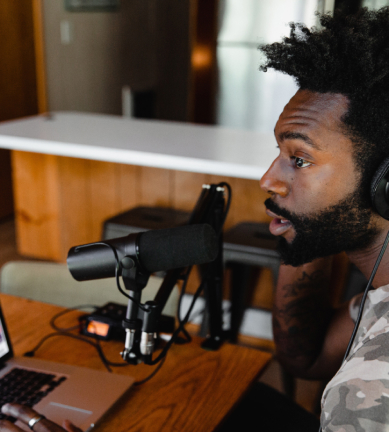

Is hardware really worth it when it comes to podcasting? The
answer is...it depends. Here's our reasons on why you might want
to consider picking something up.
Tips & Tricks
Episode 2
Mic tricks to take you to the next level
Stop rolling with those default settings on your mic. These
small tweaks will take you from sounding good to great.

Gear
Episode 1
The best microphone under $200
With so many microphones on the market, how are you supposed to
know what's the best? Take a look at our top picks.